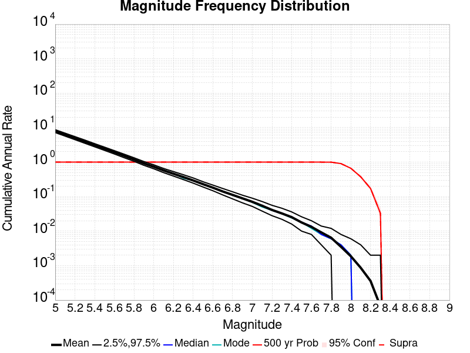
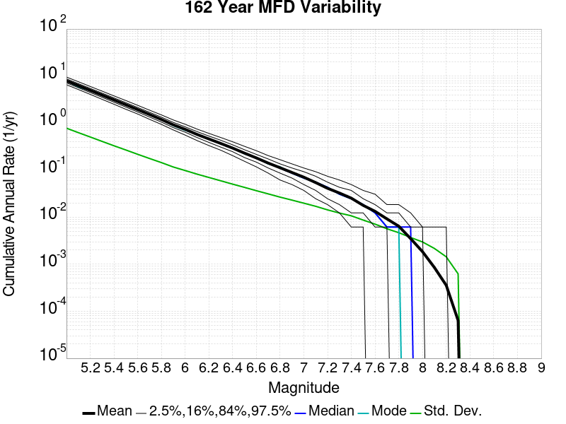
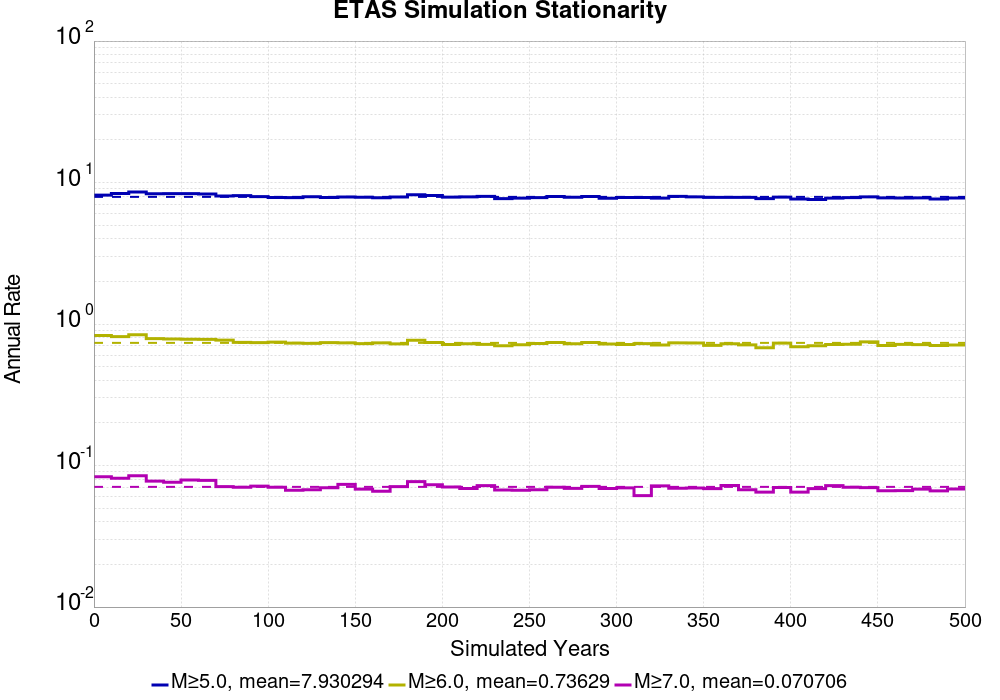
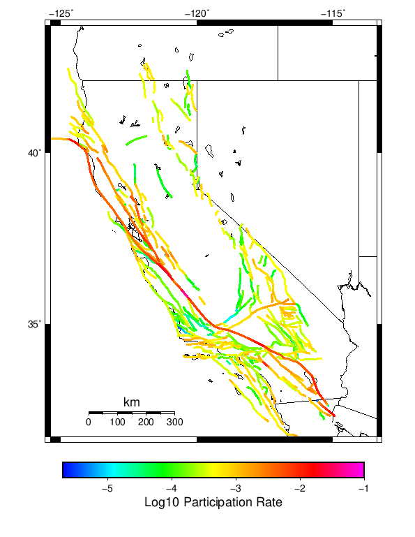
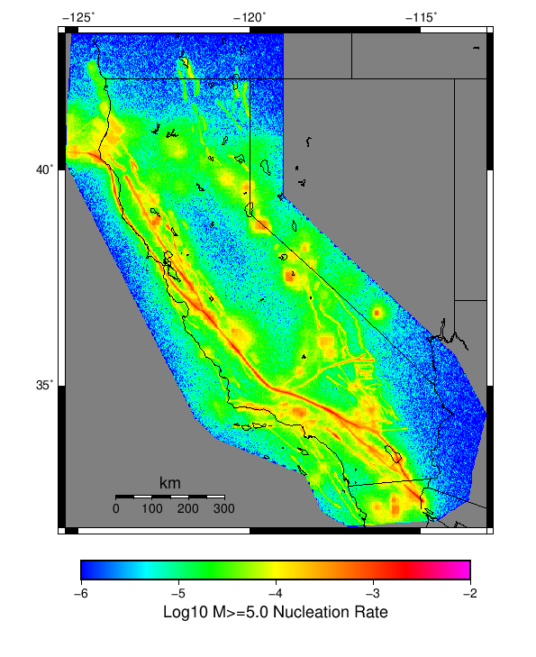
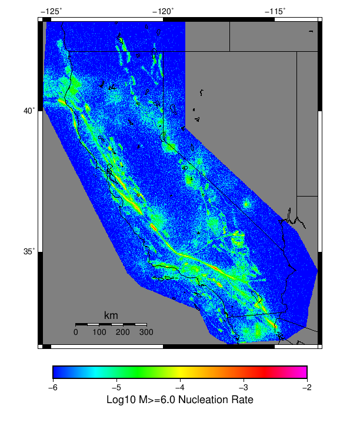
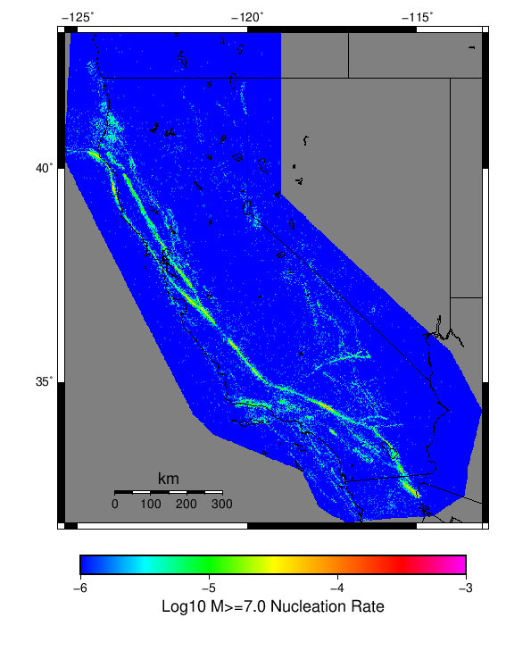

Start 2012, 500 yr, NoERT, Spontaneous, Historical Catalog Results
| Start 2012, 500 yr, NoERT, Spontaneous, Historical Catalog |
|---|
| Num Simulations | 431 (incomplete) |
| Start Time | 2012/01/01 00:00:00 UTC |
| Start Time Epoch Milliseconds | 1325376000000 |
| Duration | 500 Years |
| Includes Spontaneous? | true |
| Trigger Ruptures | (none) |
| Historical Ruptures | 60366 Trigger Ruptures |
| First: M7.3 at 1852/01/05 04:40:39 UTC |
| Last: M3.2 at 2011/12/31 19:14:44 UTC |
| Largest: M7.9 at 1857/01/09 16:25:39 UTC |
| Config Generated With | u3etas_config_builder.sh --start-year 2012 --num-simulations 1000 --duration-years 500 --prob-model NO_ERT --include-spontaneous --historical-catalog --scale-factor 1.0 --hpc-site USC_HPC --nodes 36 --hours 24 --queue scec |
Table Of Contents
Magnitude Frequency Distribution
(top)
Legend
- Mean (thick black line): mean annual rate across all 431 catalogs
- 2.5%,97.5% (thin black lines): annual rate percentiles across all 431 catalogs
- Median (thin blue line): median annual rate across all 431 catalogs
- Mode (thin cyan line): modal annual rate across all 431 catalogs (scaled to annualized value)
- 500 yr Probability (thin red line): 500 year probability calculated as the fraction of catalogs with at least 1 occurrence
- 500 yr Supraseismogenic Probability (thin dashed red line): same as above, but only for supraseismogenic ruptures on explicitly modeled UCERF3 faults
- 95% Conf (light red shaded region): binomial 95% confidence bounds on probability

| Mag | Mean | 2.5 %ile | 97.5 %ile | Median | Mode | 500 yr Probability | 500 yr Supra-Seis Prob |
|---|
| M≥5 | 7.932 | 7.188 | 8.702 | 7.912 | 8.132 | 1.000 (100.00%) | 1.000 (100.00%) |
| M≥5.1 | 6.284 | 5.686 | 6.884 | 6.270 | 6.384 | 1.000 (100.00%) | 1.000 (100.00%) |
| M≥5.2 | 4.973 | 4.466 | 5.492 | 4.956 | 4.906 | 1.000 (100.00%) | 1.000 (100.00%) |
| M≥5.3 | 3.933 | 3.526 | 4.370 | 3.918 | 3.752 | 1.000 (100.00%) | 1.000 (100.00%) |
| M≥5.4 | 3.106 | 2.778 | 3.436 | 3.100 | 3.068 | 1.000 (100.00%) | 1.000 (100.00%) |
| M≥5.5 | 2.452 | 2.198 | 2.724 | 2.446 | 2.426 | 1.000 (100.00%) | 1.000 (100.00%) |
| M≥5.6 | 1.934 | 1.736 | 2.146 | 1.930 | 1.880 | 1.000 (100.00%) | 1.000 (100.00%) |
| M≥5.7 | 1.520 | 1.346 | 1.692 | 1.512 | 1.502 | 1.000 (100.00%) | 1.000 (100.00%) |
| M≥5.8 | 1.192 | 1.058 | 1.334 | 1.188 | 1.156 | 1.000 (100.00%) | 1.000 (100.00%) |
| M≥5.9 | 0.918 | 0.814 | 1.042 | 0.914 | 0.914 | 1.000 (100.00%) | 1.000 (100.00%) |
| M≥6 | 0.736 | 0.648 | 0.832 | 0.732 | 0.724 | 1.000 (100.00%) | 1.000 (100.00%) |
| M≥6.1 | 0.574 | 0.504 | 0.652 | 0.572 | 0.572 | 1.000 (100.00%) | 1.000 (100.00%) |
| M≥6.2 | 0.459 | 0.398 | 0.532 | 0.458 | 0.444 | 1.000 (100.00%) | 1.000 (100.00%) |
| M≥6.3 | 0.368 | 0.318 | 0.430 | 0.368 | 0.374 | 1.000 (100.00%) | 1.000 (100.00%) |
| M≥6.4 | 0.293 | 0.248 | 0.348 | 0.292 | 0.294 | 1.000 (100.00%) | 1.000 (100.00%) |
| M≥6.5 | 0.229 | 0.192 | 0.270 | 0.228 | 0.226 | 1.000 (100.00%) | 1.000 (100.00%) |
| M≥6.6 | 0.182 | 0.150 | 0.216 | 0.180 | 0.178 | 1.000 (100.00%) | 1.000 (100.00%) |
| M≥6.7 | 0.141 | 0.112 | 0.172 | 0.142 | 0.144 | 1.000 (100.00%) | 1.000 (100.00%) |
| M≥6.8 | 0.112 | 0.086 | 0.138 | 0.112 | 0.110 | 1.000 (100.00%) | 1.000 (100.00%) |
| M≥6.9 | 0.089 | 0.068 | 0.110 | 0.088 | 0.092 | 1.000 (100.00%) | 1.000 (100.00%) |
| M≥7 | 0.071 | 0.054 | 0.090 | 0.070 | 0.068 | 1.000 (100.00%) | 1.000 (100.00%) |
| M≥7.1 | 0.054 | 0.040 | 0.072 | 0.054 | 0.050 | 1.000 (100.00%) | 1.000 (100.00%) |
| M≥7.2 | 0.041 | 0.028 | 0.056 | 0.040 | 0.040 | 1.000 (100.00%) | 1.000 (100.00%) |
| M≥7.3 | 0.033 | 0.022 | 0.046 | 0.034 | 0.034 | 1.000 (100.00%) | 1.000 (100.00%) |
| M≥7.4 | 0.026 | 0.016 | 0.036 | 0.026 | 0.026 | 1.000 (100.00%) | 1.000 (100.00%) |
| M≥7.5 | 0.018 | 0.010 | 0.028 | 0.018 | 0.018 | 1.000 (100.00%) | 1.000 (100.00%) |
| M≥7.6 | 0.013 | 8.00E-3 | 0.020 | 0.014 | 0.012 | 1.000 (100.00%) | 1.000 (100.00%) |
| M≥7.7 | 9.28E-3 | 4.00E-3 | 0.014 | 0.010 | 8.00E-3 | 1.000 (100.00%) | 1.000 (100.00%) |
| M≥7.8 | 6.46E-3 | 2.00E-3 | 0.012 | 6.00E-3 | 6.00E-3 | 0.995 (99.54%) | 0.995 (99.54%) |
| M≥7.9 | 3.54E-3 | 0.000 | 8.00E-3 | 4.00E-3 | 4.00E-3 | 0.907 (90.72%) | 0.907 (90.72%) |
| M≥8 | 1.84E-3 | 0.000 | 6.00E-3 | 2.00E-3 | 2.00E-3 | 0.664 (66.36%) | 0.664 (66.36%) |
| M≥8.1 | 8.68E-4 | 0.000 | 4.00E-3 | 0.000 | 0.000 | 0.381 (38.05%) | 0.381 (38.05%) |
| M≥8.2 | 3.90E-4 | 0.000 | 2.00E-3 | 0.000 | 0.000 | 0.190 (19.03%) | 0.190 (19.03%) |
| M≥8.3 | 7.42E-5 | 0.000 | 2.00E-3 | 0.000 | 0.000 | 0.037 (3.71%) | 0.037 (3.71%) |
| M≥8.4 | 0.000 | 0.000 | 0.000 | 0.000 | 0.000 | 0.000 (0.00%) | 0.000 (0.00%) |
| M≥8.5 | 0.000 | 0.000 | 0.000 | 0.000 | 0.000 | 0.000 (0.00%) | 0.000 (0.00%) |
| M≥8.6 | 0.000 | 0.000 | 0.000 | 0.000 | 0.000 | 0.000 (0.00%) | 0.000 (0.00%) |
| M≥8.7 | 0.000 | 0.000 | 0.000 | 0.000 | 0.000 | 0.000 (0.00%) | 0.000 (0.00%) |
| M≥8.8 | 0.000 | 0.000 | 0.000 | 0.000 | 0.000 | 0.000 (0.00%) | 0.000 (0.00%) |
| M≥8.9 | 0.000 | 0.000 | 0.000 | 0.000 | 0.000 | 0.000 (0.00%) | 0.000 (0.00%) |
| M≥9 | 0.000 | 0.000 | 0.000 | 0.000 | 0.000 | 0.000 (0.00%) | 0.000 (0.00%) |
Long Term Rate Variability
(top)
162 Year Variability
(top)

Download CSV Here
| Magnitude | Mean | Median | Mode | Std. Dev. | 2.5 %-ile | 16 %-ile | 84 %-ile | 97.5 %-ile |
|---|
| 5.0 | 7.9389973 | 7.9012346 | 7.9753084 | 0.7642684 | 6.5555553 | 7.203704 | 8.716049 | 9.5 |
| 5.1 | 6.289837 | 6.259259 | 6.462963 | 0.61363435 | 5.1790123 | 5.6975307 | 6.8950615 | 7.54321 |
| 5.2 | 4.9790087 | 4.95679 | 4.9691358 | 0.49698704 | 4.0925927 | 4.487654 | 5.4814816 | 6.012346 |
| 5.3 | 3.9374266 | 3.919753 | 3.9567902 | 0.4003294 | 3.2222223 | 3.5370371 | 4.3333335 | 4.7901235 |
| 5.4 | 3.1096168 | 3.0925925 | 3.1728394 | 0.32252786 | 2.5185184 | 2.7839506 | 3.4320989 | 3.7962964 |
| 5.5 | 2.4551718 | 2.4444444 | 2.4814816 | 0.26312107 | 1.9691358 | 2.191358 | 2.7098765 | 3.0185184 |
| 5.6 | 1.9369348 | 1.925926 | 1.8827161 | 0.21348375 | 1.5555556 | 1.7222222 | 2.1419754 | 2.3950617 |
| 5.7 | 1.522123 | 1.5185186 | 1.537037 | 0.17385623 | 1.2037038 | 1.345679 | 1.691358 | 1.8765432 |
| 5.8 | 1.1932772 | 1.191358 | 1.1481482 | 0.14191246 | 0.9444444 | 1.0432099 | 1.3333334 | 1.4938271 |
| 5.9 | 0.9193282 | 0.91358024 | 0.95679015 | 0.11570865 | 0.7160494 | 0.80246913 | 1.037037 | 1.1728395 |
| 6.0 | 0.7371602 | 0.72839504 | 0.6851852 | 0.096318625 | 0.5617284 | 0.6419753 | 0.8271605 | 0.9444444 |
| 6.1 | 0.5745085 | 0.56790125 | 0.537037 | 0.08076356 | 0.42592594 | 0.49382716 | 0.654321 | 0.74691355 |
| 6.2 | 0.4596259 | 0.45679012 | 0.44444445 | 0.068824686 | 0.33333334 | 0.3888889 | 0.52469134 | 0.59876543 |
| 6.3 | 0.36917686 | 0.36419752 | 0.34567901 | 0.059088543 | 0.25925925 | 0.30864197 | 0.42592594 | 0.49382716 |
| 6.4 | 0.29394746 | 0.29012346 | 0.30246913 | 0.05020328 | 0.2037037 | 0.24074075 | 0.34567901 | 0.39506173 |
| 6.5 | 0.22969837 | 0.22839506 | 0.21604939 | 0.042941958 | 0.15432099 | 0.18518518 | 0.27160493 | 0.32098764 |
| 6.6 | 0.18226346 | 0.18518518 | 0.16666667 | 0.036410768 | 0.11728395 | 0.14814815 | 0.21604939 | 0.25925925 |
| 6.7 | 0.14143585 | 0.14197531 | 0.12962963 | 0.03118887 | 0.08024691 | 0.11111111 | 0.17283951 | 0.2037037 |
| 6.8 | 0.112166174 | 0.11111111 | 0.11728395 | 0.026269661 | 0.061728396 | 0.086419754 | 0.13580246 | 0.16666667 |
| 6.9 | 0.08892135 | 0.086419754 | 0.09259259 | 0.02243969 | 0.049382716 | 0.06790123 | 0.11111111 | 0.13580246 |
| 7.0 | 0.07067973 | 0.06790123 | 0.06790123 | 0.018853148 | 0.037037037 | 0.049382716 | 0.09259259 | 0.11111111 |
| 7.1 | 0.05424747 | 0.055555556 | 0.055555556 | 0.016676623 | 0.024691358 | 0.037037037 | 0.074074075 | 0.086419754 |
| 7.2 | 0.041123617 | 0.043209877 | 0.037037037 | 0.0138894785 | 0.018518519 | 0.024691358 | 0.055555556 | 0.06790123 |
| 7.3 | 0.032902714 | 0.030864198 | 0.024691358 | 0.012167604 | 0.012345679 | 0.018518519 | 0.043209877 | 0.061728396 |
| 7.4 | 0.025693906 | 0.024691358 | 0.024691358 | 0.0107273245 | 0.0061728396 | 0.012345679 | 0.037037037 | 0.049382716 |
| 7.5 | 0.018007696 | 0.018518519 | 0.018518519 | 0.0088006165 | 0.0061728396 | 0.012345679 | 0.024691358 | 0.037037037 |
| 7.6 | 0.013391195 | 0.012345679 | 0.012345679 | 0.007105487 | 0.0 | 0.0061728396 | 0.018518519 | 0.030864198 |
| 7.7 | 0.009295065 | 0.0061728396 | 0.0061728396 | 0.005652094 | 0.0 | 0.0061728396 | 0.012345679 | 0.018518519 |
| 7.8 | 0.0064545083 | 0.0061728396 | 0.0061728396 | 0.004640948 | 0.0 | 0.0 | 0.012345679 | 0.018518519 |
| 7.9 | 0.003542341 | 0.0061728396 | 0.0 | 0.003707987 | 0.0 | 0.0 | 0.0061728396 | 0.012345679 |
| 8.0 | 0.001823685 | 0.0 | 0.0 | 0.002990044 | 0.0 | 0.0 | 0.0061728396 | 0.0061728396 |
| 8.1 | 8.497799E-4 | 0.0 | 0.0 | 0.002155203 | 0.0 | 0.0 | 0.0 | 0.0061728396 |
| 8.2 | 3.8192357E-4 | 0.0 | 0.0 | 0.0014877496 | 0.0 | 0.0 | 0.0 | 0.0061728396 |
| 8.3 | 7.1610666E-5 | 0.0 | 0.0 | 6.6124974E-4 | 0.0 | 0.0 | 0.0 | 0.0 |
| 8.4 | 0.0 | 0.0 | 0.0 | 0.0 | 0.0 | 0.0 | 0.0 | 0.0 |
| 8.5 | 0.0 | 0.0 | 0.0 | 0.0 | 0.0 | 0.0 | 0.0 | 0.0 |
| 8.6 | 0.0 | 0.0 | 0.0 | 0.0 | 0.0 | 0.0 | 0.0 | 0.0 |
| 8.7 | 0.0 | 0.0 | 0.0 | 0.0 | 0.0 | 0.0 | 0.0 | 0.0 |
| 8.8 | 0.0 | 0.0 | 0.0 | 0.0 | 0.0 | 0.0 | 0.0 | 0.0 |
| 8.9 | 0.0 | 0.0 | 0.0 | 0.0 | 0.0 | 0.0 | 0.0 | 0.0 |
| 9.0 | 0.0 | 0.0 | 0.0 | 0.0 | 0.0 | 0.0 | 0.0 | 0.0 |
80 Year Variability
(top)

Download CSV Here
| Magnitude | Mean | Median | Mode | Std. Dev. | 2.5 %-ile | 16 %-ile | 84 %-ile | 97.5 %-ile |
|---|
| 5.0 | 7.9436483 | 7.875 | 7.4625 | 1.2054708 | 5.85 | 6.725 | 9.1 | 10.575 |
| 5.1 | 6.294074 | 6.225 | 6.225 | 0.96562093 | 4.5875 | 5.325 | 7.225 | 8.4 |
| 5.2 | 4.9823184 | 4.95 | 4.775 | 0.78005254 | 3.6125 | 4.1875 | 5.725 | 6.7125 |
| 5.3 | 3.9404533 | 3.9 | 3.9375 | 0.6259613 | 2.8375 | 3.3125 | 4.55 | 5.325 |
| 5.4 | 3.1117363 | 3.075 | 2.95 | 0.5025752 | 2.225 | 2.6125 | 3.6 | 4.2375 |
| 5.5 | 2.4569411 | 2.425 | 2.325 | 0.4060661 | 1.725 | 2.0625 | 2.85 | 3.35 |
| 5.6 | 1.93852 | 1.925 | 1.925 | 0.32758862 | 1.35 | 1.625 | 2.2625 | 2.6375 |
| 5.7 | 1.5232646 | 1.5 | 1.425 | 0.26459286 | 1.05 | 1.275 | 1.775 | 2.1 |
| 5.8 | 1.194185 | 1.1875 | 1.1875 | 0.21344827 | 0.8 | 1.0 | 1.3875 | 1.6625 |
| 5.9 | 0.9198956 | 0.9125 | 0.925 | 0.17246975 | 0.6 | 0.75 | 1.0875 | 1.2875 |
| 6.0 | 0.7376402 | 0.725 | 0.7 | 0.14280255 | 0.475 | 0.6 | 0.875 | 1.05 |
| 6.1 | 0.574826 | 0.5625 | 0.5625 | 0.11944107 | 0.3625 | 0.4625 | 0.6875 | 0.8375 |
| 6.2 | 0.45989946 | 0.45 | 0.425 | 0.10143556 | 0.2875 | 0.3625 | 0.5625 | 0.675 |
| 6.3 | 0.36936387 | 0.3625 | 0.3375 | 0.08742787 | 0.2125 | 0.2875 | 0.45 | 0.55 |
| 6.4 | 0.2940787 | 0.2875 | 0.275 | 0.07492046 | 0.1625 | 0.225 | 0.3625 | 0.4625 |
| 6.5 | 0.22979505 | 0.225 | 0.2125 | 0.06436317 | 0.1125 | 0.1625 | 0.2875 | 0.3625 |
| 6.6 | 0.18235692 | 0.175 | 0.175 | 0.055362914 | 0.0875 | 0.125 | 0.2375 | 0.3 |
| 6.7 | 0.14152166 | 0.1375 | 0.1375 | 0.04701583 | 0.0625 | 0.1 | 0.1875 | 0.25 |
| 6.8 | 0.112224475 | 0.1125 | 0.1 | 0.040014613 | 0.0375 | 0.075 | 0.15 | 0.2 |
| 6.9 | 0.08898395 | 0.0875 | 0.0875 | 0.03470182 | 0.025 | 0.05 | 0.125 | 0.1625 |
| 7.0 | 0.07071249 | 0.075 | 0.0625 | 0.029577088 | 0.0125 | 0.0375 | 0.1 | 0.1375 |
| 7.1 | 0.05427784 | 0.05 | 0.05 | 0.025564386 | 0.0125 | 0.025 | 0.075 | 0.1125 |
| 7.2 | 0.04115429 | 0.0375 | 0.0375 | 0.022018801 | 0.0 | 0.025 | 0.0625 | 0.0875 |
| 7.3 | 0.032941803 | 0.0375 | 0.025 | 0.019506622 | 0.0 | 0.0125 | 0.05 | 0.075 |
| 7.4 | 0.02572989 | 0.025 | 0.025 | 0.017044328 | 0.0 | 0.0125 | 0.0375 | 0.0625 |
| 7.5 | 0.018044276 | 0.0125 | 0.0125 | 0.014111022 | 0.0 | 0.0 | 0.025 | 0.05 |
| 7.6 | 0.013452243 | 0.0125 | 0.0125 | 0.011568254 | 0.0 | 0.0 | 0.025 | 0.0375 |
| 7.7 | 0.009348415 | 0.0125 | 0.0125 | 0.009373552 | 0.0 | 0.0 | 0.0125 | 0.025 |
| 7.8 | 0.00649652 | 0.0 | 0.0 | 0.0077180355 | 0.0 | 0.0 | 0.0125 | 0.025 |
| 7.9 | 0.0035624516 | 0.0 | 0.0 | 0.005925869 | 0.0 | 0.0 | 0.0125 | 0.0125 |
| 8.0 | 0.0018271462 | 0.0 | 0.0 | 0.004471238 | 0.0 | 0.0 | 0.0 | 0.0125 |
| 8.1 | 8.5556845E-4 | 0.0 | 0.0 | 0.003176059 | 0.0 | 0.0 | 0.0 | 0.0125 |
| 8.2 | 3.8186388E-4 | 0.0 | 0.0 | 0.0021515735 | 0.0 | 0.0 | 0.0 | 0.0125 |
| 8.3 | 6.767208E-5 | 0.0 | 0.0 | 9.174132E-4 | 0.0 | 0.0 | 0.0 | 0.0 |
| 8.4 | 0.0 | 0.0 | 0.0 | 0.0 | 0.0 | 0.0 | 0.0 | 0.0 |
| 8.5 | 0.0 | 0.0 | 0.0 | 0.0 | 0.0 | 0.0 | 0.0 | 0.0 |
| 8.6 | 0.0 | 0.0 | 0.0 | 0.0 | 0.0 | 0.0 | 0.0 | 0.0 |
| 8.7 | 0.0 | 0.0 | 0.0 | 0.0 | 0.0 | 0.0 | 0.0 | 0.0 |
| 8.8 | 0.0 | 0.0 | 0.0 | 0.0 | 0.0 | 0.0 | 0.0 | 0.0 |
| 8.9 | 0.0 | 0.0 | 0.0 | 0.0 | 0.0 | 0.0 | 0.0 | 0.0 |
| 9.0 | 0.0 | 0.0 | 0.0 | 0.0 | 0.0 | 0.0 | 0.0 | 0.0 |
28 Year Variability
(top)

Download CSV Here
| Magnitude | Mean | Median | Mode | Std. Dev. | 2.5 %-ile | 16 %-ile | 84 %-ile | 97.5 %-ile |
|---|
| 5.0 | 7.945919 | 7.5 | 6.821429 | 2.1512406 | 4.928571 | 5.964286 | 9.964286 | 13.214286 |
| 5.1 | 6.295853 | 5.964286 | 5.0 | 1.7230908 | 3.8214285 | 4.714286 | 7.892857 | 10.428572 |
| 5.2 | 4.983476 | 4.714286 | 4.0 | 1.3803471 | 2.9642856 | 3.7142856 | 6.285714 | 8.285714 |
| 5.3 | 3.9413812 | 3.75 | 3.5714285 | 1.1065043 | 2.3214285 | 2.892857 | 5.0 | 6.607143 |
| 5.4 | 3.1127288 | 2.9642856 | 2.8214285 | 0.8872278 | 1.7857143 | 2.2857144 | 3.9642856 | 5.25 |
| 5.5 | 2.4577785 | 2.357143 | 2.142857 | 0.7138768 | 1.3571428 | 1.7857143 | 3.142857 | 4.142857 |
| 5.6 | 1.9391537 | 1.8571428 | 1.7857143 | 0.57606053 | 1.0357143 | 1.3928572 | 2.5 | 3.2857144 |
| 5.7 | 1.5237819 | 1.4642857 | 1.3571428 | 0.46305597 | 0.78571427 | 1.0714285 | 1.9642857 | 2.5714285 |
| 5.8 | 1.1945592 | 1.1428572 | 1.1428572 | 0.37301275 | 0.5714286 | 0.8214286 | 1.5714285 | 2.0357144 |
| 5.9 | 0.9202266 | 0.89285713 | 0.78571427 | 0.30149862 | 0.42857143 | 0.60714287 | 1.2142857 | 1.6071428 |
| 6.0 | 0.73793113 | 0.71428573 | 0.71428573 | 0.25070423 | 0.32142857 | 0.5 | 0.96428573 | 1.2857143 |
| 6.1 | 0.5751038 | 0.5714286 | 0.5714286 | 0.21050858 | 0.21428572 | 0.35714287 | 0.78571427 | 1.0357143 |
| 6.2 | 0.46008402 | 0.42857143 | 0.39285713 | 0.17922474 | 0.17857143 | 0.2857143 | 0.64285713 | 0.85714287 |
| 6.3 | 0.36951393 | 0.35714287 | 0.2857143 | 0.15395026 | 0.10714286 | 0.21428572 | 0.53571427 | 0.71428573 |
| 6.4 | 0.29419076 | 0.2857143 | 0.25 | 0.13252395 | 0.071428575 | 0.17857143 | 0.42857143 | 0.60714287 |
| 6.5 | 0.22983485 | 0.21428572 | 0.17857143 | 0.11379634 | 0.035714287 | 0.10714286 | 0.35714287 | 0.5 |
| 6.6 | 0.18244165 | 0.17857143 | 0.14285715 | 0.09794187 | 0.035714287 | 0.071428575 | 0.2857143 | 0.39285713 |
| 6.7 | 0.14162882 | 0.14285715 | 0.10714286 | 0.0834266 | 0.0 | 0.071428575 | 0.21428572 | 0.32142857 |
| 6.8 | 0.11234378 | 0.10714286 | 0.071428575 | 0.071892165 | 0.0 | 0.035714287 | 0.17857143 | 0.2857143 |
| 6.9 | 0.08909318 | 0.071428575 | 0.071428575 | 0.06199326 | 0.0 | 0.035714287 | 0.14285715 | 0.21428572 |
| 7.0 | 0.07079003 | 0.071428575 | 0.035714287 | 0.05441172 | 0.0 | 0.035714287 | 0.10714286 | 0.21428572 |
| 7.1 | 0.054339137 | 0.035714287 | 0.035714287 | 0.04719 | 0.0 | 0.0 | 0.10714286 | 0.17857143 |
| 7.2 | 0.04122229 | 0.035714287 | 0.035714287 | 0.04025597 | 0.0 | 0.0 | 0.071428575 | 0.14285715 |
| 7.3 | 0.033004154 | 0.035714287 | 0.0 | 0.035444677 | 0.0 | 0.0 | 0.071428575 | 0.10714286 |
| 7.4 | 0.025795005 | 0.035714287 | 0.0 | 0.031118322 | 0.0 | 0.0 | 0.071428575 | 0.10714286 |
| 7.5 | 0.01807405 | 0.0 | 0.0 | 0.02574704 | 0.0 | 0.0 | 0.035714287 | 0.071428575 |
| 7.6 | 0.0134824235 | 0.0 | 0.0 | 0.021680804 | 0.0 | 0.0 | 0.035714287 | 0.071428575 |
| 7.7 | 0.009344109 | 0.0 | 0.0 | 0.01771002 | 0.0 | 0.0 | 0.035714287 | 0.035714287 |
| 7.8 | 0.0065072435 | 0.0 | 0.0 | 0.014727383 | 0.0 | 0.0 | 0.035714287 | 0.035714287 |
| 7.9 | 0.0035582678 | 0.0 | 0.0 | 0.010891002 | 0.0 | 0.0 | 0.0 | 0.035714287 |
| 8.0 | 0.0018181286 | 0.0 | 0.0 | 0.00791711 | 0.0 | 0.0 | 0.0 | 0.035714287 |
| 8.1 | 8.578838E-4 | 0.0 | 0.0 | 0.0055004577 | 0.0 | 0.0 | 0.0 | 0.0 |
| 8.2 | 3.850728E-4 | 0.0 | 0.0 | 0.003688655 | 0.0 | 0.0 | 0.0 | 0.0 |
| 8.3 | 6.8240755E-5 | 0.0 | 0.0 | 0.001559758 | 0.0 | 0.0 | 0.0 | 0.0 |
| 8.4 | 0.0 | 0.0 | 0.0 | 0.0 | 0.0 | 0.0 | 0.0 | 0.0 |
| 8.5 | 0.0 | 0.0 | 0.0 | 0.0 | 0.0 | 0.0 | 0.0 | 0.0 |
| 8.6 | 0.0 | 0.0 | 0.0 | 0.0 | 0.0 | 0.0 | 0.0 | 0.0 |
| 8.7 | 0.0 | 0.0 | 0.0 | 0.0 | 0.0 | 0.0 | 0.0 | 0.0 |
| 8.8 | 0.0 | 0.0 | 0.0 | 0.0 | 0.0 | 0.0 | 0.0 | 0.0 |
| 8.9 | 0.0 | 0.0 | 0.0 | 0.0 | 0.0 | 0.0 | 0.0 | 0.0 |
| 9.0 | 0.0 | 0.0 | 0.0 | 0.0 | 0.0 | 0.0 | 0.0 | 0.0 |
Variability Duration Dependence
(top)

Download CSV Here
| Duration (years) | Mean | Median | Mode | Std. Dev. | 2.5 %-ile | 16 %-ile | 84 %-ile | 97.5 %-ile |
|---|
| 1.0 | 7.9320416 | 6.0 | 4.0 | 8.978272 | 1.0 | 3.0 | 11.0 | 29.0 |
| 4.0 | 7.9320416 | 6.5 | 5.5 | 5.1218367 | 3.0 | 4.5 | 10.75 | 22.25 |
| 8.0 | 7.9330516 | 6.875 | 5.375 | 3.821157 | 3.75 | 5.0 | 10.625 | 18.5 |
| 12.0 | 7.934162 | 7.0833335 | 6.3333335 | 3.1899154 | 4.1666665 | 5.3333335 | 10.5 | 16.75 |
| 16.0 | 7.9330516 | 7.25 | 7.125 | 2.8089385 | 4.4375 | 5.5625 | 10.375 | 15.375 |
| 20.0 | 7.9320416 | 7.35 | 6.2 | 2.5245855 | 4.65 | 5.7 | 10.2 | 14.4 |
| 24.0 | 7.9436483 | 7.4166665 | 5.9166665 | 2.3206203 | 4.7916665 | 5.8333335 | 10.166667 | 13.708333 |
| 28.0 | 7.945919 | 7.5 | 6.821429 | 2.1512406 | 4.928571 | 5.964286 | 9.964286 | 13.214286 |
| 32.0 | 7.9436483 | 7.5625 | 6.9375 | 2.0132551 | 5.0625 | 6.0625 | 9.90625 | 12.71875 |
| 36.0 | 7.953041 | 7.638889 | 7.361111 | 1.8931005 | 5.1666665 | 6.138889 | 9.777778 | 12.472222 |
| 40.0 | 7.9436483 | 7.65 | 6.95 | 1.7714168 | 5.25 | 6.25 | 9.7 | 12.1 |
| 44.0 | 7.9407105 | 7.7272725 | 6.931818 | 1.7034442 | 5.318182 | 6.2954545 | 9.590909 | 11.863636 |
| 48.0 | 7.9436483 | 7.75 | 7.7083335 | 1.60221 | 5.4166665 | 6.3541665 | 9.5 | 11.541667 |
| 52.0 | 7.953041 | 7.769231 | 7.6538463 | 1.5382627 | 5.5384617 | 6.4038463 | 9.519231 | 11.403846 |
| 56.0 | 7.9509134 | 7.785714 | 8.178572 | 1.517376 | 5.517857 | 6.410714 | 9.464286 | 11.392858 |
| 60.0 | 7.9436483 | 7.8 | 7.2 | 1.4241875 | 5.65 | 6.55 | 9.333333 | 11.05 |
| 64.0 | 7.9509134 | 7.828125 | 7.734375 | 1.3800535 | 5.703125 | 6.578125 | 9.34375 | 11.015625 |
| 68.0 | 7.945919 | 7.8382354 | 8.132353 | 1.3394774 | 5.7352943 | 6.602941 | 9.294118 | 10.867647 |
| 72.0 | 7.9511847 | 7.8472223 | 7.013889 | 1.2856642 | 5.8055553 | 6.6944447 | 9.208333 | 10.847222 |
| 76.0 | 7.952029 | 7.8421054 | 7.8421054 | 1.2390118 | 5.8289475 | 6.75 | 9.144737 | 10.710526 |
| 80.0 | 7.9436483 | 7.875 | 7.4625 | 1.2054708 | 5.85 | 6.725 | 9.1 | 10.575 |
| 84.0 | 7.954602 | 7.857143 | 7.6904764 | 1.1897447 | 5.845238 | 6.75 | 9.142858 | 10.428572 |
| 88.0 | 7.9520774 | 7.875 | 7.193182 | 1.1439116 | 5.943182 | 6.806818 | 9.090909 | 10.306818 |
| 92.0 | 7.9523 | 7.8913045 | 7.771739 | 1.103132 | 6.0108695 | 6.847826 | 9.021739 | 10.315217 |
| 96.0 | 7.9436483 | 7.8645835 | 7.78125 | 1.0558864 | 6.09375 | 6.8958335 | 8.979167 | 10.239583 |
| 100.0 | 7.9320416 | 7.87 | 8.01 | 1.0333353 | 6.15 | 6.89 | 8.96 | 10.15 |
| 200.0 | 7.9712353 | 7.905 | 7.79 | 0.66111463 | 6.76 | 7.33 | 8.62 | 9.36 |
| 300.0 | 8.013844 | 7.9666667 | 7.8733335 | 0.50351834 | 7.1566668 | 7.516667 | 8.523334 | 9.136666 |
| 400.0 | 7.9712353 | 7.9525 | 8.0175 | 0.41449314 | 7.16 | 7.6 | 8.375 | 8.885 |
| 500.0 | 7.9320416 | 7.912 | 8.132 | 0.386558 | 7.188 | 7.562 | 8.328 | 8.702 |
Simulation Stationarity
(top)

Section Participation
(top)
Section Participation Plots
(top)
| Min Mag | Complete Catalog (including spontaneous) |
|---|
| All Supra. Seis. |  |
| M≥6.5 |  |
| M≥7 |  |
| M≥7.5 |  |
| M≥8 |  |
Supra-Seismogenic Parent Sections Table
(top)
First 10 of 313 with matching ruptures shown
| Parent Name | Total Mean Annual Rate | Total 500 Year Prob |
|---|
| San Andreas (Parkfield) | 0.049211137 | 1.0 |
| San Andreas (Creeping Section) 2011 CFM | 0.032705337 | 1.0 |
| San Andreas (Mojave S) | 0.026037123 | 1.0 |
| Mendocino | 0.019958237 | 1.0 |
| Cerro Prieto | 0.015795823 | 1.0 |
| Imperial | 0.012965198 | 1.0 |
| Hayward (So) 2011 CFM | 0.012241299 | 1.0 |
| Brawley (Seismic Zone) alt 1 | 0.012032483 | 1.0 |
| San Andreas (Offshore) 2011 CFM | 0.010895591 | 1.0 |
| Elsinore (Glen Ivy) rev | 0.010566126 | 0.9837587 |
M≥6.5 Parent Sections Table
(top)
First 10 of 305 with matching ruptures shown
| Parent Name | Total Mean Annual Rate | Total 500 Year Prob |
|---|
| Cerro Prieto | 0.013531323 | 1.0 |
| San Andreas (Creeping Section) 2011 CFM | 0.012779582 | 1.0 |
| Mendocino | 0.010900232 | 1.0 |
| San Andreas (Mojave S) | 0.010264501 | 1.0 |
| Hayward (So) 2011 CFM | 0.010241299 | 1.0 |
| Imperial | 0.008941995 | 1.0 |
| San Andreas (San Bernardino N) | 0.008895592 | 1.0 |
| Brawley (Seismic Zone) alt 1 | 0.008584687 | 1.0 |
| San Andreas (Offshore) 2011 CFM | 0.00812529 | 1.0 |
| San Andreas (Santa Cruz Mts) 2011 CFM | 0.00787471 | 1.0 |
M≥7 Parent Sections Table
(top)
First 10 of 269 with matching ruptures shown
| Parent Name | Total Mean Annual Rate | Total 500 Year Prob |
|---|
| San Andreas (Creeping Section) 2011 CFM | 0.008269141 | 0.9953596 |
| San Andreas (Mojave S) | 0.006988399 | 1.0 |
| San Andreas (Cholame) rev | 0.006960557 | 1.0 |
| San Andreas (Carrizo) rev | 0.006923434 | 1.0 |
| San Andreas (Santa Cruz Mts) 2011 CFM | 0.006334107 | 0.9976798 |
| San Andreas (Mojave N) | 0.0060278424 | 1.0 |
| San Andreas (San Bernardino N) | 0.0059071924 | 0.9976798 |
| San Andreas (North Coast) 2011 CFM | 0.005795824 | 1.0 |
| San Andreas (Offshore) 2011 CFM | 0.005791183 | 1.0 |
| San Andreas (Big Bend) | 0.0055545243 | 1.0 |
M≥7.5 Parent Sections Table
(top)
First 10 of 207 with matching ruptures shown
| Parent Name | Total Mean Annual Rate | Total 500 Year Prob |
|---|
| San Andreas (Mojave N) | 0.005846868 | 0.9976798 |
| San Andreas (Mojave S) | 0.0053596287 | 0.9976798 |
| San Andreas (Big Bend) | 0.005308585 | 1.0 |
| San Andreas (Carrizo) rev | 0.005053364 | 1.0 |
| San Andreas (Cholame) rev | 0.0048167054 | 0.9953596 |
| San Andreas (North Coast) 2011 CFM | 0.004510441 | 0.9976798 |
| San Andreas (San Bernardino N) | 0.0042830626 | 0.97911835 |
| San Andreas (Creeping Section) 2011 CFM | 0.0041160095 | 0.93271464 |
| San Andreas (Parkfield) | 0.0037447796 | 0.9419954 |
| San Andreas (Peninsula) 2011 CFM | 0.003526682 | 0.9698376 |
M≥8 Parent Sections Table
(top)
First 10 of 59 with matching ruptures shown
| Parent Name | Total Mean Annual Rate | Total 500 Year Prob |
|---|
| San Andreas (Mojave N) | 0.0016566125 | 0.63109046 |
| San Andreas (Mojave S) | 0.0016148492 | 0.6218097 |
| San Andreas (Big Bend) | 0.0015823666 | 0.6148492 |
| San Andreas (Carrizo) rev | 0.0015823666 | 0.6148492 |
| San Andreas (San Bernardino N) | 0.0015638052 | 0.6102088 |
| San Andreas (Cholame) rev | 0.0015452437 | 0.60324824 |
| San Andreas (Parkfield) | 0.0013642692 | 0.54292345 |
| San Andreas (Creeping Section) 2011 CFM | 0.001276102 | 0.51972157 |
| San Andreas (Santa Cruz Mts) 2011 CFM | 8.5382833E-4 | 0.38051045 |
| San Andreas (Peninsula) 2011 CFM | 7.6102087E-4 | 0.34570765 |
Gridded Nucleation
(top)
| Min Mag | Complete Catalog (including spontaneous) |
|---|
| M≥5 |  |
| M≥6 |  |
| M≥7 |  |
(top)
{
"numSimulations": 1000,
"duration": 500.0,
"startYear": 2012,
"includeSpontaneous": true,
"randomSeed": 1567442589085,
"binaryOutput": true,
"binaryOutputFilters": [
{
"prefix": "results_complete",
"descendantsOnly": false
},
{
"prefix": "results_m5_preserve_chain",
"minMag": 5.0,
"preserveChainBelowMag": true,
"descendantsOnly": false
}
],
"forceRecalc": false,
"simulationName": "Start 2012, 500 yr, NoERT, Spontaneous, Historical Catalog",
"numRetries": 3,
"outputDir": "${ETAS_SIM_DIR}/2019_09_02-Start2012_500yr_NoERT_Spontaneous_HistoricalCatalog-includeSpont-histCatalog-no_ert",
"triggerCatalog": "${ETAS_LAUNCHER}/inputs/u3_historical_catalog.txt",
"triggerCatalogSurfaceMappings": "${ETAS_LAUNCHER}/inputs/u3_historical_catalog_finite_fault_mappings.xml",
"treatTriggerCatalogAsSpontaneous": true,
"cacheDir": "${ETAS_LAUNCHER}/inputs/cache_fm3p1_ba",
"fssFile": "${ETAS_LAUNCHER}/inputs/2013_05_10-ucerf3p3-production-10runs_COMPOUND_SOL_FM3_1_SpatSeisU3_MEAN_BRANCH_AVG_SOL.zip",
"probModel": "NO_ERT",
"applySubSeisForSupraNucl": true,
"totRateScaleFactor": 1.0,
"gridSeisCorr": true,
"timeIndependentERF": false,
"griddedOnly": false,
"imposeGR": false,
"includeIndirectTriggering": true,
"gridSeisDiscr": 0.1,
"catalogCompletenessModel": "RELAXED",
"configCommand": "u3etas_config_builder.sh --start-year 2012 --num-simulations 1000 --duration-years 500 --prob-model NO_ERT --include-spontaneous --historical-catalog --scale-factor 1.0 --hpc-site USC_HPC --nodes 36 --hours 24 --queue scec",
"configTime": 1567442589085
}